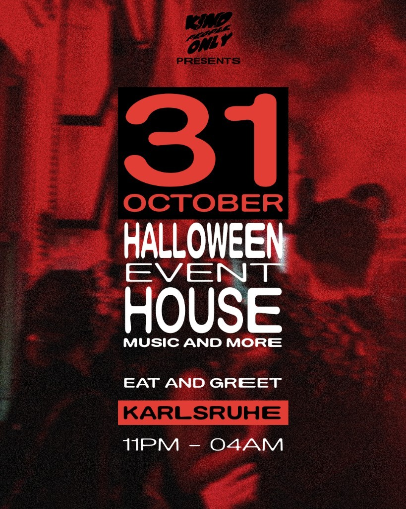
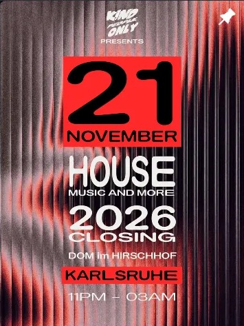
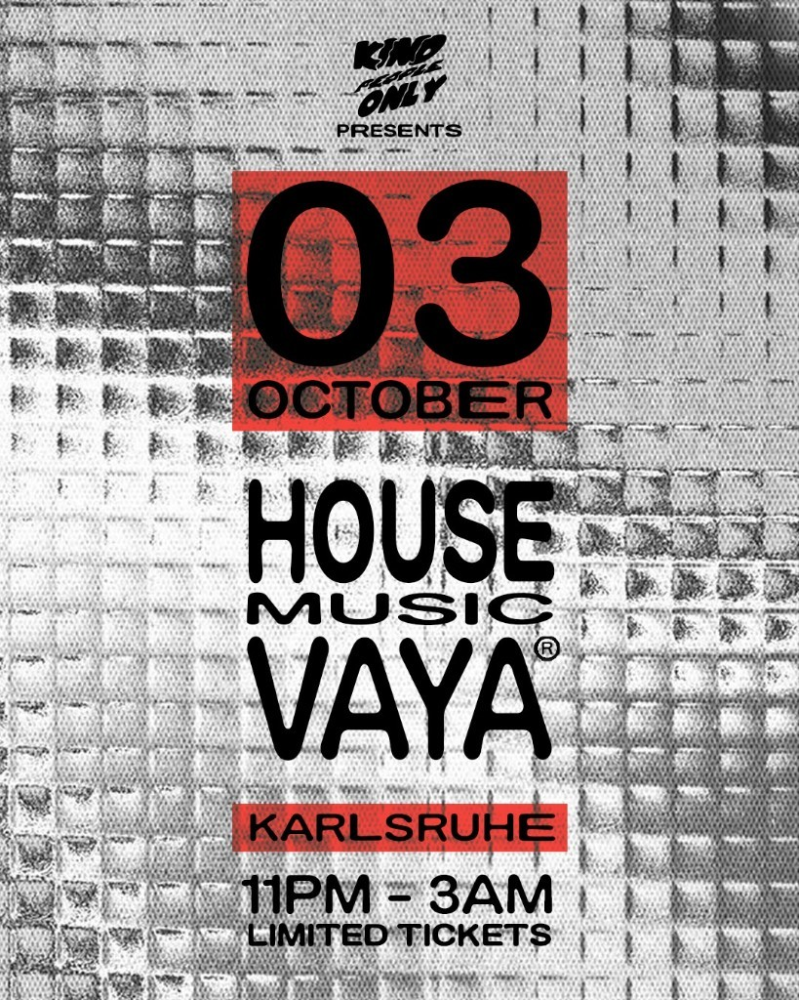
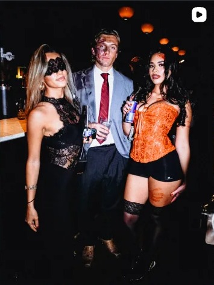
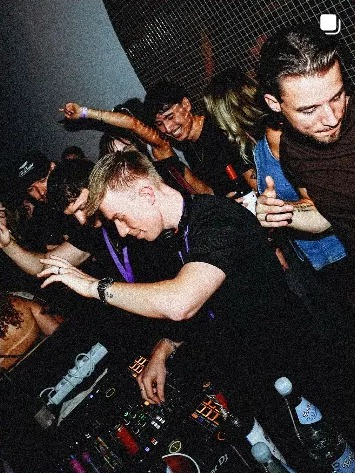
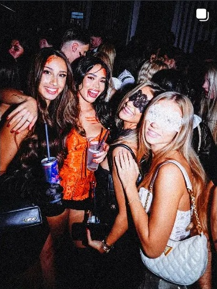
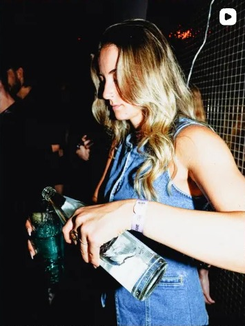
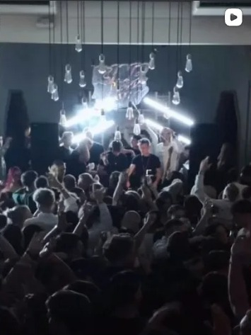

Flyer & Fotos
Brand v1 · 04 · Instagram, Print

1 2 3 4 5 6Aufbau Event-Flyer · 4:5
1Logo + „PRESENTS“ klein, oben mittig.
2Datum-Box KPO-Rot, leicht durchsichtig, kaum Rand. Zahl in Bastardo Black füllt sie fast ganz, Monat darunter.
3Titel-Stapel Bastardo, Schnitte im Wechsel (Black / Light), jede Zeile gestaucht oder gestreckt auf volle Breite.
4Location in weißen Versalien.
5Stadt-Label eckig in Rot mit schwarzer Schrift.
6Uhrzeit weiß, breit gesperrt.
Hintergründe
Ein Foto mit rotem Licht, Vorhang oder Discokugel. Unscharf, Korn drüber, Text bleibt scharf.


Fotostil · echte Nächte, kein Stock






Direkter Blitz, harte Schatten, tiefe Schwarztöne.
Filmkorn 8–12 %, leichte Unschärfe erlaubt.
Echte Momente: Crowd, DJs, Lachen, Hände hoch.
Licht rot oder kalt-weiß, Hauttöne bleiben warm.
Vorlagen: public/assets/flyerbrand/README.md